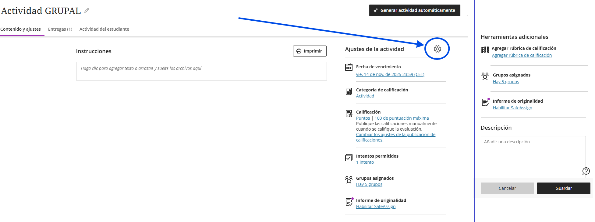
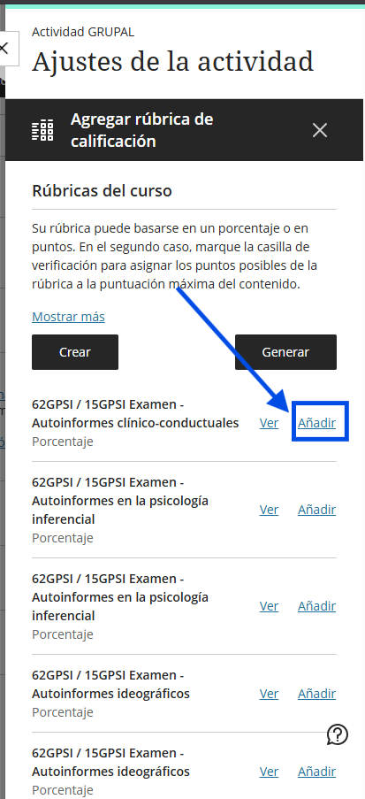
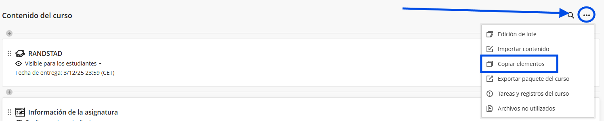
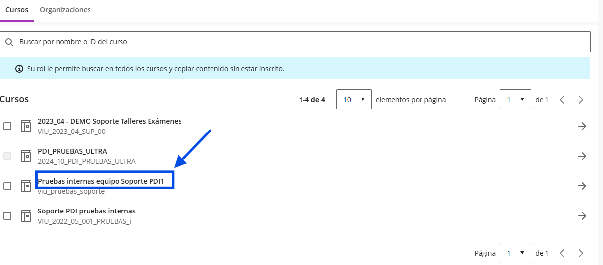
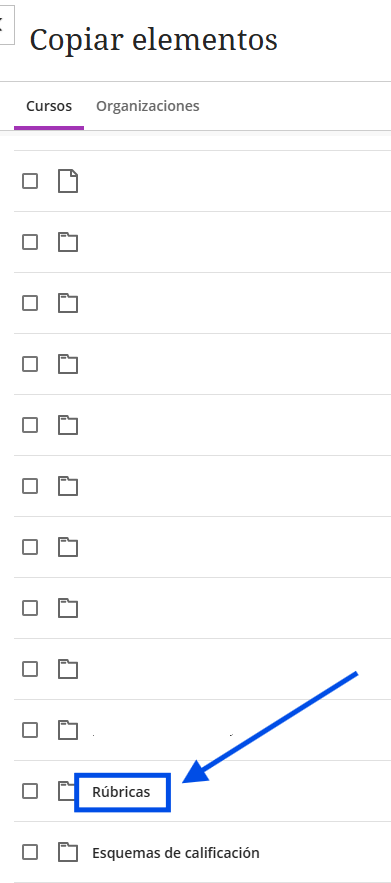
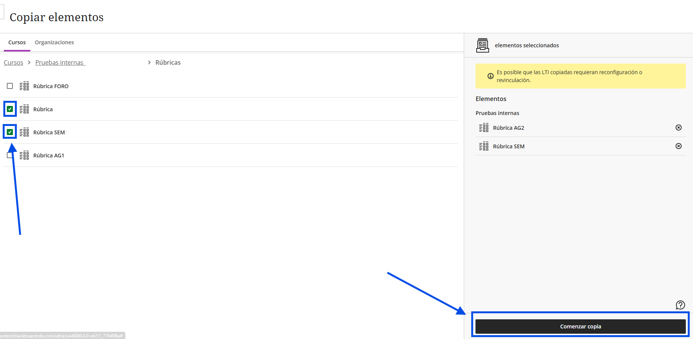
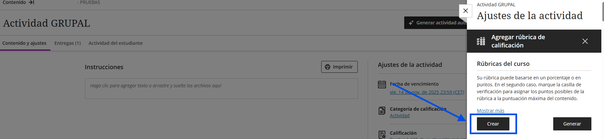
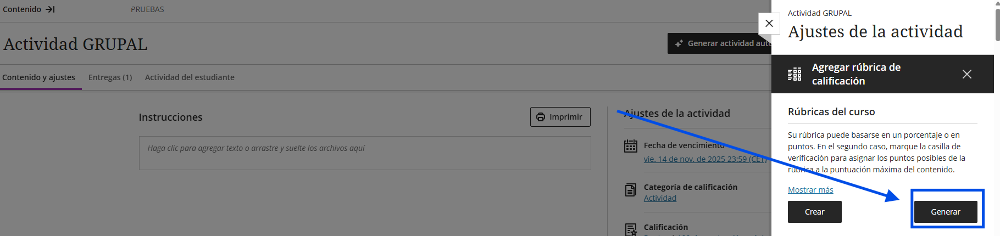
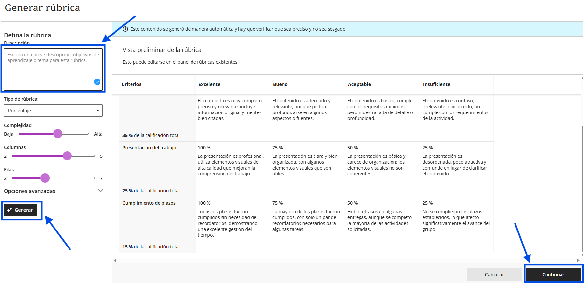

Guía de Gestión de Rúbricas
Selecciona el método que mejor se adapte a tu necesidad:
Usa este paso si la rúbrica ya aparece en el listado de "Rúbricas del curso" pero la actividad aún no la tiene asociada.
- Entra en la Configuración de la Actividad (icono de engranaje).
- Desliza hasta "Herramientas adicionales" y pulsa en Agregar rúbrica de calificación.
- Verás un listado con todas las rúbricas disponibles en el curso. Pulsa sobre "Añadir" de la rúbrica que quieres usar.


Para reutilizar rúbricas de asignaturas pasadas o de otros grupos.
- En el curso actual, pulsa el icono de los tres puntos (...) junto a "Contenido del curso" y elige Copiar elementos.
- Busca el curso de origen y entra en la carpeta Rúbricas.
- Marca la rúbrica deseada y pulsa en Comenzar copia.




- En la configuración de la tarea, pulsa en Agregar rúbrica de calificación.
- Selecciona el botón Crear.
- Configura el tipo (puntos/porcentaje) y rellena los textos. No olvides pulsar Guardar.


- Dentro del panel de rúbricas, elige Generar.
- Escribe el tema de la rúbrica y pulsa en Generar. Revisa y pulsa en Continuar.


Hecho por Jose F. © 2025
← Volver al panel principal